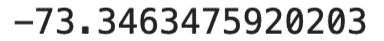
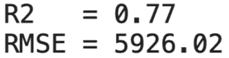

第三章:与TPOT一起探索回归
在本章中，您将通过三个数据集获得自动化回归建模的实践经验。您将学习如何使用TPOT以自动化的方式处理回归任务，其中包含大量的实际例子、技巧和建议。
我们将首先讨论基本主题，如数据集加载、探索性数据分析和基本数据准备。然后，我们会弄脏TPOT的手。您将学习如何以自动化的方式训练模型，以及如何评估这些模型。
在自动训练模型之前，我们将了解如何使用基本模型(如线性回归)获得良好的性能。这些模型将作为TPOT超越市场的基准。
本章将涵盖以下主题:
- 将自动回归建模应用于鱼市场数据集
- 将自动回归建模应用于保险数据集
- 将自动回归建模应用于车辆数据集
技术要求
要完成本章，您需要一台安装了Python和TPOT的计算机。前一章演示了如何为独立Python安装和通过Anaconda安装从头开始设置环境。参见 第2章 、深入TPOT ，了解环境设置的详细说明。
你可以在这里下载本章的源代码和数据集:https://github . com/packt publishing/Machine-Learning-Automation-with-TPOT/tree/main/chapter 03
将自动回归建模应用于鱼市场数据集
本节演示如何通过TPOT将机器学习自动化应用于回归数据集。本节使用鱼市场数据集(https://www.kaggle.com/aungpyaeap/fish-market)进行探索和回归建模。目标是预测一条鱼的重量。您将学习如何加载数据集、可视化数据集、充分准备数据集，以及如何通过TPOT找到最佳的机器学习管道:
- The first thing to do is to load in the required libraries and load in the dataset. With regards to the libraries, you'll need
numpy,pandas,matplotlib, andseaborn. Additionally, thercParamsmodule is imported withmatplotlibto tweak the plot stylings a bit. You can find the code for this step in the following block:import numpy as np import pandas as pd import matplotlib.pyplot as plt import seaborn as sns from matplotlib import rcParams rcParams['axes.spines.top'] = False rcParams['axes.spines.right'] = False df = pd.read_csv('data/Fish.csv') df.head()下面是前几行的样子(调用
head()方法的结果):图3.1-鱼市场数据集的前五行
- Exploratory data analysis comes in next. It's not a hard requirement for using TPOT, but you should always be aware of how your data looks. The first thing of interest is missing values. Here's how to check for them:
df.isnull().sum()
这是相应的输出:
图3.2–每列缺失值的计数
如您所见，没有丢失值。这使得数据准备过程变得更加容易和简短。
- The next step is to check how the target variable is distributed. For this dataset, we are trying to predict
Weight. Here's the code for drawing a simple histogram:plt.figure(figsize=(12, 7)) plt.title('Target variable (Weight) distribution', size=20) plt.xlabel('Weight', size=14) plt.ylabel('Count', size=14) plt.hist(df['Weight'], bins=15, color='#4f4f4f', ec='#040404');这是直方图的样子:
图3.3–目标变量(重量)的直方图
大多数鱼都很轻，但也有几条很重的。让我们进一步探索物种，以便更好地理解。
- The following code prints how many instances of a specific species there are (the number and percentage of the total), and also prints average and standard deviation for every attribute. To be more precise, a subset of the original dataset is kept where the species equals the specified species. Afterward, the number of records, total percentage, mean, and standard deviation are printed for every column in the subset.
def describe_species(species): subset = df[df['Species'] == species] print(f'============ {species.upper()} ============') print(f'Count: {len(subset)}') print(f'Pct. total: {(len(subset) / len(df) * 100):.2f}%') for column in df.columns[1:]: avg = np.round(subset[column].mean(), 2) sd = np.round(subset[column].std(), 2) print(f'Avg. {column:>7}: {avg:6} +/- {sd:6}') for species in df['Species'].unique(): describe_species(species) print()下面是相应的输出:
图3.4-各种鱼类的特色探索
- Finally, let's check for correlation between attributes. Correlation can be calculated only for numerical attributes. The following snippet shows you how to visualize a correlation matrix with the
seabornlibrary:plt.figure(figsize=(12, 9)) plt.title('Correlation matrix', size=20) sns.heatmap(df.corr(), annot=True, cmap='Blues');这是相关矩阵:
图3.5–特征的相关矩阵
你可以在探索性数据分析过程中做更多的工作，但我们将在这里停止。这本书向你展示了如何用TPOT构建自动化模型，所以我们应该花大部分时间在这上面。
- There's one step left to do before modeling, and that is data preparation. We can't pass non-numerical attributes to the pipeline optimizer. We'll convert them to dummy variables for simplicity's sake and merge them with the original data afterward. Here's the code for doing so:
species_dummies = pd.get_dummies(df['Species'], drop_first=True, prefix='Is') df = pd.concat([species_dummies, df], axis=1) df.drop('Species', axis=1, inplace=True) df.head()这是数据集现在的样子:
图3.6-数据准备后鱼市场数据集的前五行
如您所见，我们删除了
Species列，因为不再需要它了。接下来让我们开始建模。 - 首先，我们需要导入一些内容，并决定得分策略。TPOT有几个回归得分指标。默认的是
neg_mean_squared_error。我们不能逃避负的度量，但是我们至少可以让它和目标变量有相同的单位。预测重量并记录重量平方的误差是没有意义的。这就是均方根误差 ( RMSE )发挥作用的地方。这是一个简单的指标，计算前面讨论的均方误差的平方根。由于平方根运算，我们跟踪的是原始单位(重量)的误差，而不是平方单位(重量平方)。我们将借助lambda函数来定义它:from tpot import TPOTRegressor from sklearn.model_selection import train_test_split from sklearn.metrics import mean_squared_error, make_scorer rmse = lambda y, y_hat: np.sqrt(mean_squared_error(y, y_hat))
- Next on the requirement list is the train test split. We will keep 75% of the data for training and evaluate on the rest:
X = df.drop('Weight', axis=1) y = df['Weight'] X_train, X_test, y_train, y_test = train_test_split( X, y, test_size=0.25, random_state=42 )下面分别列出了训练集和测试集中的实例数量:
图3.7–训练和测试集中的实例数量
- Next, let's make a model with the linear regression algorithm. This model is just a baseline that TPOT needs to outperform:
from sklearn.linear_model import LinearRegression lm = LinearRegression() lm.fit(X_train, y_train) lm_preds = lm.predict(X_test) rmse(y_test, lm_preds)
以下是测试集上线性回归的相应RMSE值:
图3.8–线性回归模型的RMSE得分(基线)
基线模型平均误差82个重量单位。不错，考虑到我们的重量高达1500磅。
- Next, let's fit a TPOT pipeline optimization model. We will use our RMSE scorer and perform the optimization for 10 minutes. You can optimize for more time, but 10 minutes should outperform the baseline model:
rmse_scorer = make_scorer(rmse, greater_is_better=False) pipeline_optimizer = TPOTRegressor( scoring=rmse_scorer, max_time_mins=10, random_state=42 ) pipeline_optimizer.fit(X_train, y_train)
优化完成后，控制台中显示了以下输出:
图3.9-TPOT回归器输出
- Here's how to obtain the RMSE score:
pipeline_optimizer.score(X_test, y_test)
下面是相应的输出:
图3.10-TPOT优化管道模型的RMSE得分
不要担心数字前的负号。实际的RMSE是73.35重量单位。TPOT模型的表现优于基线模型。你只需要知道这些。TPOT 让我们通过
fitted_pipeline_属性访问最佳管道。它看起来是这样的:图3.11-完整的TPOT管道
- As a final step, we can export the pipeline to a Python file. Here's how:
pipeline_optimizer.export('fish_pipeline.py')该文件如下所示:
图3.12-TPOT管道的源代码
现在，您可以使用该文件对新的、未见过的数据进行预测。
在这个部分，你已经用TPOT在一个简单的数据集上建立了你的第一个自动化机器学习管道。大多数时候，在实践中，你采取的步骤看起来是相似的。不同之处在于数据清理和准备。在将数据集传递给TPOT之前，请务必做好充分的准备。当然，TPOT为你做了很多事情，但它无法将垃圾数据转化为可用的模型。
在下一节中，您将了解如何将TPOT应用于医疗保险数据集。
将自动回归建模应用于保险数据集
本部分演示了如何将自动化机器学习解决方案应用于稍微复杂一点的数据集。您将使用医疗保险费用数据集(https://www.kaggle.com/mirichoi0218/insurance)根据几个预测变量来预测保险费用。您将学习如何加载数据集、执行探索性数据分析、如何准备数据集，以及如何使用TPOT找到最佳的机器学习管道:
- As with the previous example, the first step is to load in the libraries and the dataset. We'll need
numpy,pandas,matplotlib, andseabornto start with the analysis. Here's how to import the libraries and load the dataset:import numpy as np import pandas as pd import matplotlib.pyplot as plt import seaborn as sns from matplotlib import rcParams rcParams['axes.spines.top'] = False rcParams['axes.spines.right'] = False df = pd.read_csv('data/insurance.csv') df.head()下图显示了前五行:
图3.13-保险数据集的前五行
- We'll continue with the exploratory data analysis. As with the previous example, we'll first check for the number of missing values. Here's the code for doing so:
df.isnull().sum()
下图显示了每列缺失值的计数:

图3.14–保险数据集每列的缺失值计数
如您所见，没有丢失值。
- We're trying to predict the
chargescolumn with this dataset, so let's quickly check what type of values we can expect there. A histogram seems like an easy enough option. Here's the code needed for drawing one:plt.figure(figsize=(12, 7)) plt.title('Target variable (charges) distribution', size=20) plt.xlabel('Charge', size=14) plt.ylabel('Count', size=14) plt.hist(df['charges'], bins=15, color='#4f4f4f', ec='#040404');这是结果直方图:
图3.15-目标变量的分布
- Let's dive deeper into the analysis and explore other variables. The goal is to see the average insurance costs for every categorical variable segment. We'll use the median as an average value, as it's less prone to outliers.
进行这种分析最简单的方法是创建一个函数，为指定的列创建一个条形图。下面的函数对这个例子和将来的许多例子都很有用。它从一个分组的数据集中计算出一个中值，并可视化一个条形图，在条形图顶部有一个标题、标签、图例和文本。在执行分组操作后，您通常可以使用此功能来可视化某个变量的中间值。它最适合分类变量:
def make_bar_chart(column, title, ylabel, xlabel, y_offset=0.12, x_offset=700): ax = df.groupby(column).median()[['charges']].plot( kind='bar', figsize=(10, 6), fontsize=13, color='#4f4f4f' ) ax.set_title(title, size=20, pad=30) ax.set_ylabel(ylabel, fontsize=14) ax.set_xlabel(xlabel, fontsize=14) ax.get_legend().remove() for i in ax.patches: ax.text(i.get_x() + x_offset, i.get_height() + y_offset, f'${str(round(i.get_height(), 2))}', fontsize=15) return ax - Let's now use this function to visualize the median insurance cost for smokers and non-smokers. Here's the code:
make_bar_chart( column='smoker', title='Median insurance charges for smokers and non-smokers', ylabel='Insurance charge ($)', xlabel='Do they smoke?', y_offset=700, x_offset=0.12 )
图3.16-吸烟者和非吸烟者的保险费用中位数
如你所见，吸烟者支付的保险费比不吸烟者高几倍。
- Let's make a similar-looking visualization for comparing median insurance costs between genders:
make_bar_chart( column='sex', title='Median insurance charges between genders', ylabel='Insurance charge ($)', xlabel='Gender', y_offset=200, x_offset=0.15 )
图3.17-两性间的保险费用中位数
这里没有太大的区别。
- But what will happen if we compare median insurance costs by the number of children? The following code snippet does just that:
make_bar_chart( column='children', title='Median insurance charges by number of children', ylabel='Insurance charge ($)', xlabel='Number of children', y_offset=200, x_offset=-0.15 )
成本是如何分配的:
图3.18–按子女数量划分的保险费用中位数
保险费用似乎会一直上涨到第五个孩子。可能五个孩子的家庭没那么多。你能自己证实吗？
- What about the region? Here's the code for visualizing median insurance costs by region:
make_bar_chart( column='region', title='Median insurance charges by region', ylabel='Insurance charge ($)', xlabel='Region', y_offset=200, x_offset=0 )
下图显示了每个区域的成本分布情况:
图3.19–按地区划分的保险费用中位数
这两个值相差不大。
- There are a couple of things we need to do for this dataset to be machine learning ready. First, we'll have to remap string values to integers for the columns
sexandsmoker. Then, we'll need to create dummy variables for theregioncolumn. This step is necessary because TPOT can't understand raw textual data.下面是做必要准备的代码片段:
df['sex'] = [1 if x == 'female' else 0 for x in df['sex']] df.rename(columns={'sex': 'is_female'}, inplace=True) df['smoker'] = [1 if x == 'yes' else 0 for x in df['smoker']] region_dummies = pd.get_dummies(df['region'], drop_first=True, prefix='region') df = pd.concat([region_dummies, df], axis=1) df.drop('region', axis=1, inplace=True) df.head()调用
head()函数会产生下图所示的数据集:图3.20-准备后的保险数据集
- The dataset is now ready for predictive modeling. Before we do so, let's check for variable correlations with the target variable. The following snippet draws the correlation matrix with annotations:
plt.figure(figsize=(12, 9)) plt.title('Correlation matrix', size=20) sns.heatmap(df.corr(), annot=True, cmap='Blues');对应的相关矩阵如下图所示:
图3.21–保险数据集关联矩阵
下一站——预测建模。
- As before, the first step is to make a train/test split. The following code snippet shows you how to do that:
from sklearn.model_selection import train_test_split X = df.drop('charges', axis=1) y = df['charges'] X_train, X_test, y_train, y_test = train_test_split( X, y, test_size=0.25, random_state=42 ) y_train.shape, y_test.shape下图显示了培训和测试实例的数量:
图3.22–训练和测试集中的实例数量
- We'll first make a baseline model with a linear regression algorithm. It will serve as something TPOT must outperform. You'll find a code snippet for training a baseline model here:
from sklearn.linear_model import LinearRegression from sklearn.metrics import r2_score, mean_squared_error rmse = lambda y, y_hat: np.sqrt(mean_squared_error(y, y_hat)) lm = LinearRegression() lm.fit(X_train, y_train) lm_preds = lm.predict(X_test) print(f'R2 = {r2_score(y_test, lm_preds):.2f}') print(f'RMSE = {rmse(y_test, lm_preds):.2f}')决定系数(R2)和均方根误差(RMSE)值如下图所示:
图3.23–线性回归模型的R2和RMSE
一个简单的线性回归模型平均误差5926.02美元。这个简单的模型捕获了数据集中77%的方差。
- We can further explore the linear regression model's feature importance by examining the assigned weights (coefficients).
for i, column in enumerate(df.columns[:-1]): coef = np.round(lm.coef_[i], 2) print(f'{column:17}: {coef:8}')输出如下图所示:
图3.24-线性回归模型的系数
可以看到，系数最大的一列是
smoker。这很有意义，因为它证实了我们在探索性数据分析阶段所做的可视化。 - It's now time to bring in the big guns. We'll use the TPOT library to produce an automated machine learning pipeline. We'll optimize the pipeline for R2 score this time, but feel free to stick with RMSE or any other metric.
以下代码片段导入TPOT库，实例化它，并适合管道:
from tpot import TPOTRegressor pipeline_optimizer = TPOTRegressor( scoring='r2', max_time_mins=10, random_state=42, verbosity=2 ) pipeline_optimizer.fit(X_train, y_train)
10分钟后，您应该会在笔记本中看到以下输出:
图3.25-每代人的TPOT分数
在过去的几代中，训练集上的分数开始增加。如果你给TPOT更多的时间来训练，你可能会得到一个稍微好一点的模型。
- The R2 score on the test set can be obtained with the following code:
pipeline_optimizer.score(X_test, y_test)
图3.26–TPOT·R2在测试集上的得分
- You can obtain R2 and RMSE values for the test set manually. The following code snippet shows you how:
tpot_preds = pipeline_optimizer.predict(X_test) print(f'R2 = {r2_score(y_test, tpot_preds):.2f}') print(f'RMSE = {rmse(y_test, tpot_preds):.2f}')相应的分数如下所示:
图3.27–TPOT·R2和RMSE在测试集上的得分
- As the last step, we'll export the optimized pipeline to a Python file. The following code snippet does it:
pipeline_optimizer.export('insurance_pipeline.py')优化管道的Python代码如下所示:
图3.28–保险数据集的TPOT优化管道
你现在可以使用这个文件对新的、看不见的数据进行预测。最好是让管道根据需要执行优化，但是即使10分钟也足以生成高质量的模型。
本节向您展示了如何构建针对不同指标优化的自动化管道，并向控制台输出更详细的输出。如您所见，优化代码或多或少是相同的。从一个项目到另一个项目，数据准备会有很大的变化，这也是你花费大部分时间的地方。
在下一节中，您将了解如何将TPOT应用于车辆数据集。
将自动回归建模应用于车辆数据集
本节展示了如何在迄今为止最复杂的数据集上开发自动化机器学习模型。您将使用车辆数据集(https://www . ka ggle . com/nehalbirla/vehicle-dataset-from-cardek ho)，如果您还没有下载它，请下载它。目标是根据各种预测因素预测销售价格，如制造年份和行驶公里数。
这一次，我们不会把重点放在探索性数据分析上。如果你遵循了最后两个例子，你就可以自己做到。相反，我们将专注于数据集准备和模型训练。将这个数据集转化为机器学习所需的东西需要做很多工作，所以让我们马上开始吧:
- Once again, the first step is to load in the libraries and the dataset. The requirements are the same as with previous examples. You'll need
numpy,pandas,matplotlib, andseaborn. Here's how to import the libraries and load the dataset:import numpy as np import pandas as pd import matplotlib.pyplot as plt import seaborn as sns from matplotlib import rcParams rcParams['axes.spines.top'] = False rcParams['axes.spines.right'] = False df = pd.read_csv('data/Car.csv') df.head()调用
head()函数显示前五行。您可以在下图中看到它们的样子:图3.29-车辆数据集的前五行
- The dataset has a lot of columns, and not all of them are shown in Figure 3.29. The next step in the data preparation phase is to check for missing values. The following code snippet does that:
df.isnull().sum()
结果如下图所示:

图3.30-车辆数据集缺失值的计数
一些值丢失了，我们将用最简单的方法解决这个问题——删除它们。
- Removing missing values might not always be the best option. You should always investigate why the values are missing and if they can (or should) be somehow filled. This book focuses on machine learning automation, so we won't do that here.
df.dropna(inplace=True) df.isnull().sum()
执行上述代码会导致以下计数:
图3.31–从车辆数据集中删除缺失值
- 现在没有丢失值，但这并不意味着我们完成了数据准备。以下是使该数据集适合机器学习所需的步骤列表:
- 如果手动，将
transmission列转换为整数-1，否则为0。另外，将该列重命名为is_manual。 - 将
owner列重新映射为整数。检查remap_owner()功能以获得进一步说明。 - 从相应的属性中提取汽车品牌、里程、发动机和最大功率。所有提到的属性的感兴趣的值是第一个空格之前的所有内容。
- 从属性
name、fuel和seller_type创建虚拟变量。 - Concatenate the original dataset with dummy variables and drop unnecessary attributes.
def remap_owner(owner): if owner == 'First Owner': return 1 elif owner == 'Second Owner': return 2 elif owner == 'Third Owner': return 3 elif owner == 'Fourth & Above Owner': return 4 else: return 0
下面是执行所有提到的转换的代码:
df['transmission'] = [1 if x == 'Manual' else 0 for x in df['transmission']] df.rename(columns={'transmission': 'is_manual'}, inplace=True) df['owner'] = df['owner'].apply(remap_owner) df['name'] = df['name'].apply(lambda x: x.split()[0]) df['mileage'] = df['mileage'].apply(lambda x: x.split()[0]).astype(float) df['engine'] = df['engine'].apply(lambda x: x.split()[0]).astype(int) df['max_power'] = df['max_power'].apply(lambda x: x.split()[0]).astype(float) brand_dummies = pd.get_dummies(df['name'], drop_first=True, prefix='brand') fuel_dummies = pd.get_dummies(df['fuel'], drop_first=True, prefix='fuel') seller_dummies = pd.get_dummies(df['seller_type'], drop_first=True, prefix='seller') df.drop(['name', 'fuel', 'seller_type', 'torque'], axis=1, inplace=True) df = pd.concat([df, brand_dummies, fuel_dummies, seller_dummies], axis=1)
- 如果手动，将
图3.32-准备好的车辆数据集
这种格式的数据可以传递给机器学习算法。让我们接下来做那件事。
- As always, we'll start with the train test split. The following code snippet shows you how to perform it on this dataset:
from sklearn.model_selection import train_test_split X = df.drop('selling_price', axis=1) y = df['selling_price'] X_train, X_test, y_train, y_test = train_test_split( X, y, test_size=0.25, random_state=42 ) y_train.shape, y_test.shape图3.33–训练和测试集中的实例数量
- 这次我们不会用你的标准标准来评估回归模型(R2和RMSE)。我们将使用
scikit-learn库，所以我们必须手动实现它。下面是方法:def mape(y, y_hat): y, y_hat = np.array(y), np.array(y_hat) return np.mean(np.abs((y - y_hat) / y)) * 100
- And now it's time to make a baseline model. Once again, it will be a linear regression model, evaluated on the test set with R2 and MAPE metrics. Here's the code for implementing the baseline model:
from sklearn.linear_model import LinearRegression from sklearn.metrics import r2_score lm = LinearRegression() lm.fit(X_train, y_train) lm_preds = lm.predict(X_test) print(f'R2 = {r2_score(y_test, lm_preds):.2f}') print(f'MAPE = {mape(y_test, lm_preds):.2f}')相应的结果如下图所示:
图3.34–基线模型的R2和MAPE
平均而言，基线模型的误差为43%。这是很多，但我们必须从某处开始。
- Let's take a look at the linear regression model coefficient to determine which features are important. Here's the code for obtaining coefficients:
for i, column in enumerate(df.columns[:-1]): coef = np.round(lm.coef_[i], 2) print(f'{column:20}: {coef:12}')图3.35–基线模型系数
请花一点时间来体会一下这是多么容易理解。年份越高，车越新，导致价格越高。车辆行驶的公里数越多，价格下降越多。看起来自动变速器的汽车价格更高。你明白了。线性回归提供了可解释性。但它缺乏准确性。这就是TPOT要改进的地方。
- Let's fit a TPOT model next and optimize it for MAPE score. We'll train the model for 10 minutes on every available CPU core (indicated by
n_jobs=-1):from tpot import TPOTRegressor from sklearn.metrics import make_scorer mape_scorer = make_scorer(mape, greater_is_better=False) pipeline_optimizer = TPOTRegressor( scoring=mape_scorer, max_time_mins=10, random_state=42, verbosity=2, n_jobs=-1 ) pipeline_optimizer.fit(X_train, y_train)
10分钟后您将看到的输出如下图所示:
图3.36-TPOT优化过程的输出
看起来10分钟对于TPOT来说远远不够。
生成的管道如下图所示:
图3.37-10分钟后最佳拟合管道
- And now the moment of truth – did the MAPE decrease? Here's the code to find out:
tpot_preds = pipeline_optimizer.predict(X_test) print(f'R2 = {r2_score(y_test, tpot_preds):.2f}') print(f'MAPE = {mape(y_test, tpot_preds):.2f}')输出如下图所示:
图3.38-TPOT优化模型的R2和MAPE
如你所见，TPOT显著降低了误差，同时提高了拟合优度(R2)。果然不出所料。
最后的代码演示部分向您展示了在更复杂的数据集上训练自动化模型是多么容易。这个过程或多或少是相同的，这取决于您正在优化的指标，但是数据准备阶段才是最重要的。
如果你花更多的时间准备和分析数据，也许删除一些噪音数据，你会得到更好的结果，我保证！这主要是当许多列包含文本数据时的情况。从那里可以提取很多特征。
总结
这是书中第一个纯实践的章节。你已经把前几章的理论和实践联系起来了。你已经建立了不是一个，而是三个全自动机器学习模型。毫无疑问，你现在应该能够使用TPOT来解决任何类型的回归问题。
正如数据科学和机器学习中的大多数事情一样，90%的工作归结为数据准备。TPOT可以让这个比例更高，因为花在设计和调整模型上的时间更少了。明智地利用这些额外的时间，让自己完全熟悉数据集。这是没有办法的。
在下一章中，您将看到如何为分类数据集构建自动化机器学习模型。这一章也将完全是动手操作。稍后，在第五章与TPOT和达斯克的平行训练中，我们将理论与实践相结合。
问&答
- 哪种类型的数据可视化可以让您探索连续变量的分布？
- 解释R2、RMSE和MAPE指标。
- 你能使用TPOT的自定义评分功能吗？如果是，如何实现？
- 为什么必须首先建立基线模型？哪种算法被认为是回归任务的“基线”？
- 线性回归模型的系数告诉你什么？
- 当训练TPOT模型时，你如何使用所有的CPU核心？
- 可以用TPOT获得最好管道的Python代码吗？